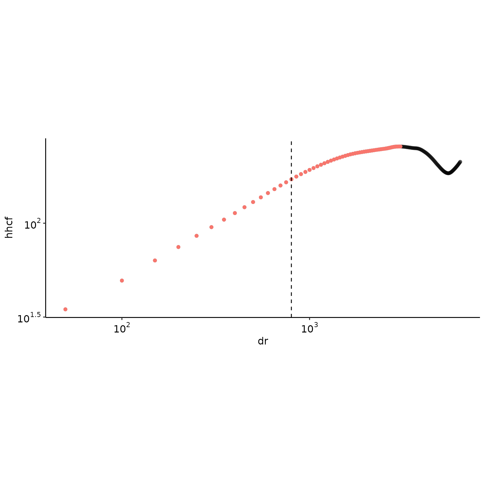

Deriving the anisotropy exponent
Hervé Guillon
03 March 2021
zeta.RmdPurpose
This vignette showcases the functions used to derive the roughness and anisotropy exponents from a rotated landscape.
Loading data
First, we perform all the steps from this vignette.
library("statisticalRoughness")
library("rayshader")
library("raster")
rstr <- raster(file.path(system.file("extdata/rasters/", package = "statisticalRoughness"), "submarine_canyon.tif"))
# raster_resolution <- 10
raster_resolution <- 50
# rstr <- raster::aggregate(rstr, fact = 9) # 90 m to match Pastor-Satorras
# raster_resolution <- 90
FT2D <- rstr %>% detrend_dem() %>% raster::as.matrix() %>%
fft2D(dx = raster_resolution, dy = raster_resolution, Hann = TRUE)
nbin <- 20
binned_power_spectrum <- bin(log10(FT2D$radial_frequency_vector), log10(FT2D$spectral_power_vector), nbin)
binned_power_spectrum <- na.omit(binned_power_spectrum)
normalized_spectral_power_matrix <- get_normalized_spectral_power_matrix(binned_power_spectrum, FT2D)
filtered_spectral_power_matrix <- filter_spectral_power_matrix(normalized_spectral_power_matrix, FT2D, quantile_prob = c(0.9999))
ang_fourier <- get_fourier_angle(filtered_spectral_power_matrix, FT2D)
ang_fourier <- 0
rotated_raster <- rotate_raster(rstr, ang_fourier) On the figure below, the horizontal line is the middle row, the leftmost vertical line is the first third column and the rightmost vertical line is the middle column.

Height-height correlation functions
The height-height correlation function (HHCF) is defined as:
\[C(r) = \left\langle \sqrt{[h(x+r,t)-h(x,t)]^2} \right\rangle\]
with \(h\) the elevation, \(x\) the spatial coordinate, \(t\) the time coordinate, \(r\) a spatial increment and where brackets indicate averaging. With this definition, we can now calculate the HHCF for the rotated_raster in the row-wise (margin = 1) and column-wise directions (margin = 2) using get_hhcf().
Roughness exponent, \(\alpha\)
Definition and examples
The HHCF scales with increasing \(r\) as:
\[ C(r) \sim r^\alpha \]
with \(\alpha\) the roughness exponent. We now use get_alpha() to derive the roughness exponents \(\alpha_x\) and \(\alpha_y\) in each direction. The option do_plot = TRUE provides a graphical display of the step-wise binned regression process and identification of the cross-over lengthscale. As the regression is a piecewise regression, for each direction, two slopes are returned, for example: \(\alpha_{1,x}\) and \(\alpha_{2,x}\).
get_alpha_(hhcf_x$hhcf[ind_x, ], raster_resolution, hhcf_x$autocorr_len[ind_x], do_plot = TRUE)
#> rc alpha1 alpha2 rmax alpha.r2
#> 1 900 0.7098919 0.4400109 900 0.9990707
get_alpha_(hhcf_y$hhcf[ind_y, ], raster_resolution, hhcf_y$autocorr_len[ind_y], do_plot = TRUE)
#> rc alpha1 alpha2 rmax alpha.r2
#> 1 550 0.4990442 0.3582344 550 0.9997282get_alpha() includes a number of safeguard and the function will return NA. Here is an example the roughly follow a ridgeline, the middle column, with no statistically consistent scaling.
get_alpha_(hhcf_y$hhcf[ind_x, ], raster_resolution, hhcf_y$autocorr_len[ind_x], do_plot = TRUE)
#> rc alpha1 alpha2 rmax alpha.r2
#> 1 800 0.5858021 0.2630057 800 0.9993276Computing all roughness exponents
Provided a list of HHCF from get_hhcf(), the function get_all_alpha() computes all step-wise regressions.
alpha_x <- get_all_alpha_(hhcf_x, raster_resolution)
alpha_y <- get_all_alpha_(hhcf_y, raster_resolution)The resulting data.frames can easily be summarized with summarise_alpha(). For example:
alpha_x %>% summarise_alpha()
#> rc_min rc_mean rc_max rc_sd rc_IQR alpha1_min alpha1_mean alpha1_max
#> 1 300 687.0079 1000 215.6765 375 0.2980933 0.6625037 0.815061
#> alpha1_sd alpha1_IQR alpha2_min alpha2_mean alpha2_max alpha2_sd alpha2_IQR
#> 1 0.09010577 0.1432971 0.1013226 0.3741094 0.5047531 0.09252255 0.1277108
#> rmax_min rmax_mean rmax_max rmax_sd rmax_IQR alpha.r2_min alpha.r2_mean
#> 1 300 687.0079 1000 215.6765 375 0.9803992 0.9980126
#> alpha.r2_max alpha.r2_sd alpha.r2_IQR
#> 1 0.9999609 0.003395262 0.001633519
alpha_y %>% summarise_alpha()
#> rc_min rc_mean rc_max rc_sd rc_IQR alpha1_min alpha1_mean alpha1_max
#> 1 500 718.2927 900 102.8823 150 0.4902996 0.5906993 0.7834738
#> alpha1_sd alpha1_IQR alpha2_min alpha2_mean alpha2_max alpha2_sd alpha2_IQR
#> 1 0.06916046 0.07288459 0.1766741 0.3511234 0.5004916 0.06996465 0.0858283
#> rmax_min rmax_mean rmax_max rmax_sd rmax_IQR alpha.r2_min alpha.r2_mean
#> 1 500 718.2927 900 102.8823 150 0.9901366 0.9981793
#> alpha.r2_max alpha.r2_sd alpha.r2_IQR
#> 1 0.9999859 0.001887551 0.001563519In a more human-readable format, we can summarize the entire landscape on rotated_raster by:
| row-wise direction, \(x\) | column-wise direction, \(y\) | |
|---|---|---|
| \(\alpha_1\) | 0.66 \(\pm\) 0.09 | 0.59 \(\pm\) 0.069 |
| \(\alpha_2\) | 0.37 \(\pm\) 0.093 | 0.35 \(\pm\) 0.07 |
These numbers mean that the topography is mainly correlated in a positive way below NA meters and more correlated in the \(x\)-direction than in the \(y\)-direction as \(\alpha_{1,x} > \alpha_{1,y} > 0.5\). Above NA meters, the topography is negatively correlated and more so in the y-direction than in the \(x\)-direction \(\alpha_{2,y} < \alpha_{2,x} < 0.5\). These results also mean that the \(x\)-direction corresponds to the down-slope direction, \(\mathbf{e}_\parallel\), while the \(y\)-direction corresponds to the across-slope direction, \(\mathbf{e}_\perp\). Further, the dominant slope in the \(x\)-direction results in increased smoothing and higher values of roughness exponents. This is what we could have expected from a visual inspection of the landscape.
Anisotropy exponent, \(\zeta\)
The anisotropy exponent is the ratio between the down-slope and across-slope roughness exponents:
\[ \zeta = \frac{\alpha_\perp}{\alpha_\parallel}\]
Because of the increased smoothing due to gravity in the down-slope direction, \(\alpha_\perp \geq \alpha_\parallel\) and \(\zeta \geq 1\). From the central values of \(\alpha_{1,x}\) and \(\alpha_{1,y}\), the value of the anisotropy exponent \(\zeta_1\) can be derived as:
\[ \zeta_1 = \frac{\max{\alpha_{1,x}, \alpha_{1,x}}}{\min{\alpha_{1,x}, \alpha_{1,x}}}\]
This estimate of \(\zeta\) is handled by an internal function which includes a check for the spread of the distribution of \(\alpha\). If the distribution is not constrained enough, NA values are returned. For the current landscape:
| anisotropy exponent, \(\zeta\) | |
|---|---|
| \(\zeta_1\) | 1.12 |
| \(\zeta_2\) | 1.07 |
get_zeta(rstr, raster_resolution, full = TRUE) %>% dplyr::mutate_all(signifNA)
#> fc beta1 beta2 beta.r2 alpha1_min.x alpha1_mean.x alpha1_max.x
#> x 0.000834 -6.32 -3.2 0.993 0.322 0.663 0.828
#> alpha1_sd.x alpha1_IQR.x alpha2_min.x alpha2_mean.x alpha2_max.x alpha2_sd.x
#> x 0.0878 0.131 0.0932 0.368 0.51 0.0987
#> alpha2_IQR.x rc_min.x rc_mean.x rc_max.x rc_sd.x rc_IQR.x rmax_min.x
#> x 0.148 250 683 1000 227 400 250
#> rmax_mean.x rmax_max.x rmax_sd.x rmax_IQR.x alpha.r2_min.x alpha.r2_mean.x
#> x 683 1000 227 400 0.968 0.998
#> alpha.r2_max.x alpha.r2_sd.x alpha.r2_IQR.x alpha1_min.y alpha1_mean.y
#> x 1 0.00373 0.00124 0.49 0.592
#> alpha1_max.y alpha1_sd.y alpha1_IQR.y alpha2_min.y alpha2_mean.y alpha2_max.y
#> x 0.786 0.0692 0.0849 0.189 0.353 0.488
#> alpha2_sd.y alpha2_IQR.y rc_min.y rc_mean.y rc_max.y rc_sd.y rc_IQR.y
#> x 0.0666 0.0809 250 713 900 123 150
#> rmax_min.y rmax_mean.y rmax_max.y rmax_sd.y rmax_IQR.y alpha.r2_min.y
#> x 250 713 900 123 150 0.99
#> alpha.r2_mean.y alpha.r2_max.y alpha.r2_sd.y alpha.r2_IQR.y zeta1 zeta2 theta
#> x 0.998 1 0.00194 0.00151 1.12 1.04 91.6
#> rc w.x w.y w xi.x xi.y xi
#> x 698 91.4 90.3 90.8 679 716 697
get_zeta(rstr,raster_resolution) %>% dplyr::mutate_all(signifNA)
#> beta1 beta2 alpha1 alpha1.x alpha1.y zeta1 alpha2 alpha2.x alpha2.y zeta2
#> x -6.32 -3.2 0.627 0.663 0.592 1.12 0.36 0.368 0.353 1.04
#> theta inv.fc rc xi xi.x xi.y w w.x w.y
#> x 91.6 1200 698 697 679 716 90.8 91.4 90.3